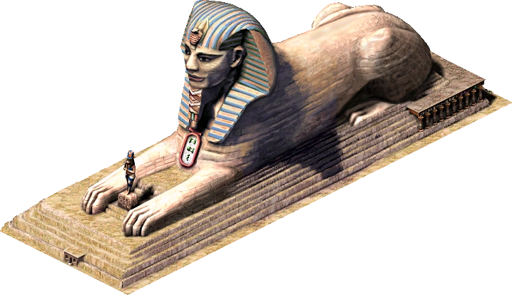

Sfinga je fascinující mytický tvor, který se objevuje ve starověkém Egyptě i řecké mytologii. V Egyptě byla sfinga často zobrazována jako socha s tělem lva a hlavou člověka, berana nebo sokola. Tyto sochy měly důležitý symbolický význam – lví tělo představovalo sílu a moc, zatímco hlava znázorňovala moudrost a autoritu. Sfingy byly stavěny u vstupů k chrámům nebo palácům, aby chránily svatá místa a oslavovaly krále nebo bohy. Nejznámější sfinga, Velká sfinga v Gíze, je největší a nejstarší známá socha svého druhu. Její hlava zřejmě znázorňuje faraona, zatímco lví tělo symbolizuje jeho královskou moc.
Stavba sfing byla podobně náročná jako stavba pyramid. Sochy byly vytvářeny z velkých kusů kamene, které byly pečlivě opracovány a umístěny na určené místo. Velké sfingy jako ta v Gíze se skládají z monolitických bloků, které byly vytesány z jednoho kusu kamene. Socha mohla být obrovská – například Velká sfinga má délku přes 70 metrů a výšku 20 metrů. Tato socha nejen že sloužila jako symbol, ale také jako strážce, který měl za úkol chránit vstupy do posvátných míst a ukazovat důležitost a moc vládců nebo božstev, které reprezentovala.